UDN
Search public documentation:
LightFunctionsCH
English Translation
日本語訳
한국어
Interested in the Unreal Engine?
Visit the Unreal Technology site.
Looking for jobs and company info?
Check out the Epic games site.
Questions about support via UDN?
Contact the UDN Staff
日本語訳
한국어
Interested in the Unreal Engine?
Visit the Unreal Technology site.
Looking for jobs and company info?
Check out the Epic games site.
Questions about support via UDN?
Contact the UDN Staff
Light Functions (光照函数)
概述
光照函数是虚幻引擎3中光源应该如何照亮场景的数学表示。默认，光源将使用基于光源组件定义的各种输入的常量值；比如亮度和颜色。光照函数允许您定义更多有趣的设置来获得摇曳的光照、蒙板光照、闪动的光照、及贴图光照。光照函数使用虚幻引擎3中的材质系统，这使得美工人员和关卡设计人员可以很轻松地创建并修改它。同时，因为光照函数使用材质系统，所以可以实例化这些光照函数来获得各种变化效果。

Decals（贴花） vs 光照函数
需要记住的非常重要的一点是光照函数仍然是光源，因此，如果您想在给物体投射光照的过程中投射贴图那么光照函数将是很有用的。光照函数也可以投射贴图立方体，但 decals不能。因此，某物是否投射光照是决定性因素。可以使用哪些材质表达式?
并不是所有材质表达式都能和光照函数结合使用。这是因为某些表达式在和光照函数结合使用时没有什么意义。然而，大部分函数都可以使用。所有的数学表达式和贴图样本表达式都有效，但是，那些依赖于其他渲染目标或网格物体属性的表达式将会被忽略。请参照材质表达式概要页面作为参考指南，获得这些表达式的工作方式。
Texture 2D（二维贴图）
可以使用二维贴图，但是最好将它们保留应用于指定了方向的光源，比如定向光源和点光源。它们也可以用于聚光源，但是会出现贴图条带现象。如果定向光源的光照投射到了一个几乎垂直的表面时也会产生贴图条带现象。 具有带贴图光照函数的点光源。注意到顶棚和地面上有贴图条带。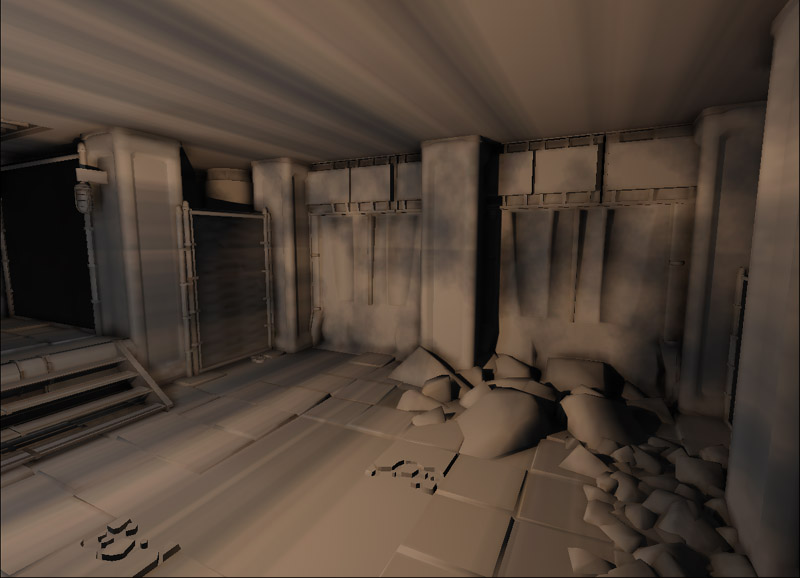
具有带贴图光照函数的聚光源。因为进有较少的几个表面接收到了光照，所以仅出现了少量的贴图条带。 具有带贴图光照函数的定向光源。注意在近乎垂直的表面上的贴图条带，比如某些墙壁上。
具有带贴图光照函数的定向光源。注意在近乎垂直的表面上的贴图条带，比如某些墙壁上。

Texture Cube(立方体贴图)
贴图立方体用于立方体贴图映射。立方体贴图映射是一种环境映射的方法，将每个贴图定义为立方体的其中一个面。在这种情况下当在光照函数中使用立方体贴图时将会产生投影贴图映射。 具有带立方体贴图光照函数的点光源。没有出现明显的贴图条带。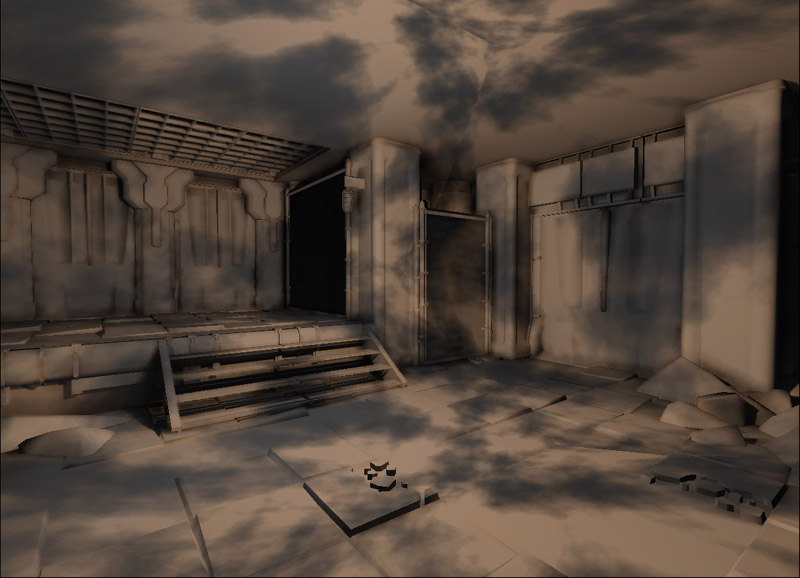
具有带立方体贴图光照函数的聚光源。没有出现明显的贴图条带。 具有带立方体贴图光照函数的定向光源。没有出现明显的贴图条带。
具有带立方体贴图光照函数的定向光源。没有出现明显的贴图条带。
 这样做意味着您应该总是使用立方体贴图吗? 答案取决于您正在执行哪种类型的投射及您想让它如何影响场景。立方体贴图非常依赖于不会创建任何缝隙的贴图设置。同时，也很难轻松地在材质中平移或旋转贴图立方体。
这样做意味着您应该总是使用立方体贴图吗? 答案取决于您正在执行哪种类型的投射及您想让它如何影响场景。立方体贴图非常依赖于不会创建任何缝隙的贴图设置。同时，也很难轻松地在材质中平移或旋转贴图立方体。
如何旋转我的立方体贴图光照函数?
最简单的方法是旋转光源actor。光源actor的旋转值将会调整材质中所使用的光源向量的值。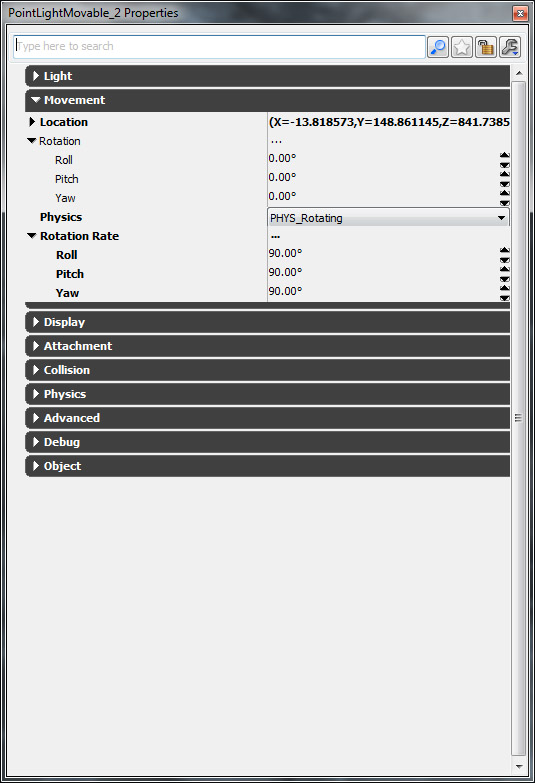
注意
光照函数不能指定光源的最大亮度，因为它是通过光源组件进行设置。但是，光照函数可以作为一个缩放比例来调整光源的最终亮度。 一个光照函数可以输出一个颜色，但是，除非光源组件本身是用了白色否则将不会计算光照函数的颜色。您可以使用Desaturate材质表达式来调整使用了着色贴图的光照函数。可以使用哪种类型的光源?
唯一不支持的光源类型是天空光源，但是，这是有道理的，因为天空光源简单地定义了任何地方的环境光照。如果需要，光源可以是任何变种类型：动态光源、可移动的光源或可切换的光源及投射动态阴影的光源。不能为静态光源创建光照函数；如果选择了不合适的光源虚幻编辑器创建光照函数将会失败。
虚幻编辑器光照函数指南
创建光照函数
要创建一个新的光照函数，首先要在内容浏览器中创建一个新的材质。设置您想存储这个材质的包和组(如果光照函数时针对关卡的，那么甚至可以设置为您的关卡)，然后设置您想调用这个光照函数执行什么处理。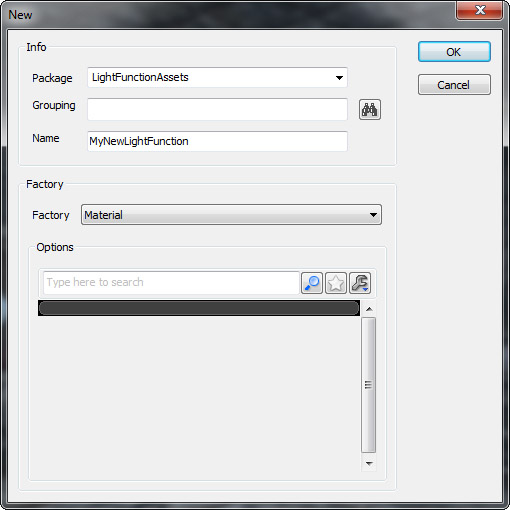
为了使得虚幻引擎3将这个材质识别为用作为光照函数，那么必须在材质属性中进行明确地设置。可以通过展开 Mutually Exclusive Usage 类别，然后点击 Used As Light Function(用作为光照函数) 项。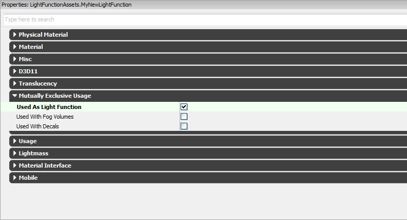
创建如下所示的一个简单的光照函数。这个光照函数平滑地插值较暗光照和较亮光照。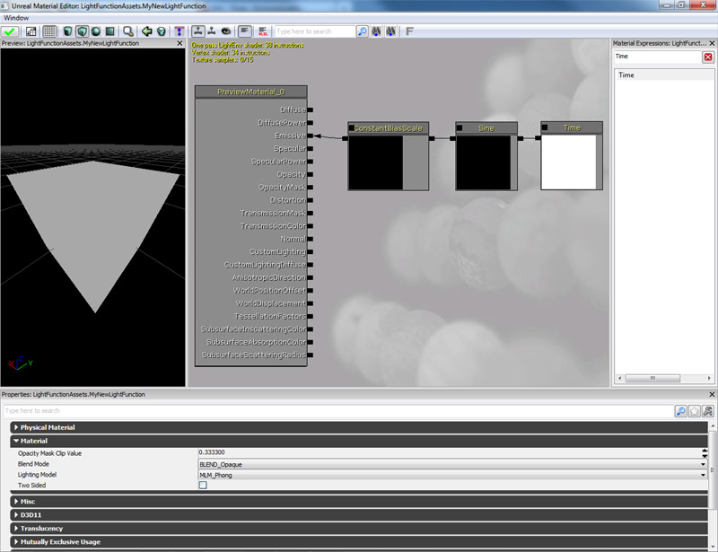
关闭材质编辑器并选择yes（是）来保存材质。然后保存包。给光照函数添加光源
首先要确保的是光源是适合应用光照函数的类型的变种。您可以右击光源actor，使用关联菜单在各种光源变种间切换。对于光照函数，您将需要确保使用 Dominant(主光源) 、 Moveable（可移动光源） 或 Toggle-able（可切换光源） 类型光源的变种。 打开光源actor的属性。展开 Light 类别，然后找到 Light Component 对象。在 Light Component 对象中，展开 Light Component 类别。
打开光源actor的属性。展开 Light 类别，然后找到 Light Component 对象。在 Light Component 对象中，展开 Light Component 类别。
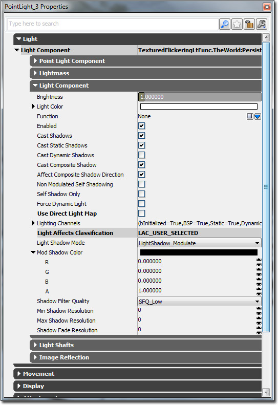
点击 Light Function 域旁边的蓝色箭头。然后点击出现的关联菜单中的 Light Function 。这将创建一个新的 Light Function 对象。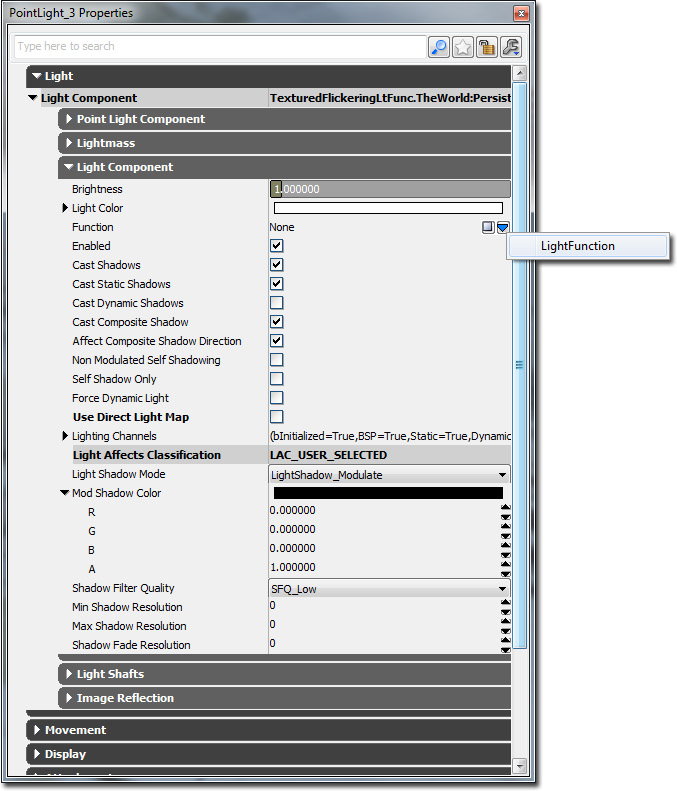
展开 Light Function(光照函数) 对象, 选择您在上面制作的光照函数，并点击绿色的箭头来设置光照函数的 Source Material(源材质) 域。如果您应用一个使用了贴图的光照函数，那么您也可以投影的缩放比例。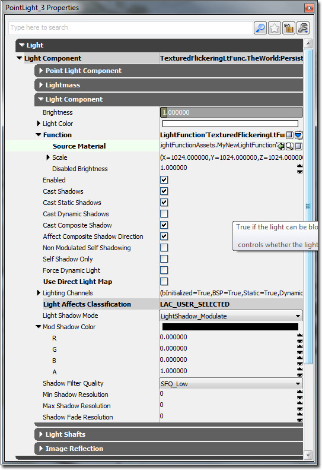
光照函数属性
- Source Material(源材质) - 光照函数所使用的材质。
- Scale(缩放比例) -
- X - 调整X轴上的投影比例。
- Y - 调整Y轴上的投影比例。
- Z - 调整Z轴上的投影比例。
- Disabled Brightness(禁用的亮度) - 这是当指定了光照函数时应用到光源上的亮度因数，但是处于禁用状态。比如，在使用 SceneCapView_LitNoShadows的场景截图中。这应该设置为光照函数的自发光输入端的平均亮度，值应该在0.f 和1.f之间。
Unrealscript 光照函数指南
嵌入的光照函数
可以使用Unrealscript在默认属性部分创建光照函数。当您已经在Unrealscript中创建了光照函数后，那么您可以将创建好的光照函数迁入到一个附加的光源组件中。如果您想在运行时产生光源并且让他自动具有光照函数那么这是有用的。您也可以通过在虚幻编辑器中使用光照函数创建一个光源设置的原型来实现这个处理。
class EmbeddedLightFunctionLight extends PointLightMovable;
defaultproperties
{
// Create the light function in script
Begin Object Class=LightFunction Name=MyLightFunction
SourceMaterial=Material'LightFunctionAssets.SimpleFlickeringLightFunction'
End Object
// Attach the light function to the light component
Begin Object Name=PointLightComponent0
Function=MyLightFunction
End Object
bNoDelete=false
}
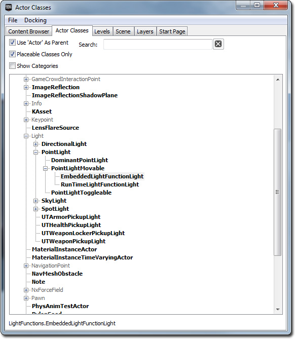
将光照函数添加到动态地创建的光源上
光照函数可以添加到关卡中现有的光源上，也可以添加到在游戏过程中产生的光源上。唯一的不足是光照函数将它们的材质引用声明为常量，所以目前没有办法使用UnrealScript修改它。由于这个原因，您将需要在虚幻编辑器中将光照函数创建为原型。然后您可以基于该原型生成一个新的光照函数，然后将它在运行时分配给光源组件。
class RunTimeLightFunctionLight extends PointLightMovable;
var(Light) const archetype LightFunction LightFunctionArchetype;
function PostBeginPlay()
{
local PointLightComponent PointLightComponent;
local LightFunction LightFunction;
Super.PostBeginPlay();
PointLightComponent = PointLightComponent(LightComponent);
if (PointLightComponent != None)
{
if (LightFunctionArchetype != None && LightComponent.Function == None)
{
LightFunction = new () LightFunctionArchetype.Class(LightFunctionArchetype);
if (LightFunction != None)
{
LightComponent.SetLightProperties(,, LightFunction);
}
}
PointLightComponent.UpdateColorAndBrightness();
}
}
defaultproperties
{
bNoDelete=false
}
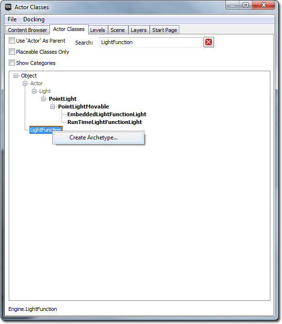
将会弹出一个窗口，这里您可以设置将要保存原型的地方。针对RunTimeLightFunctionLight 类重复这个过程。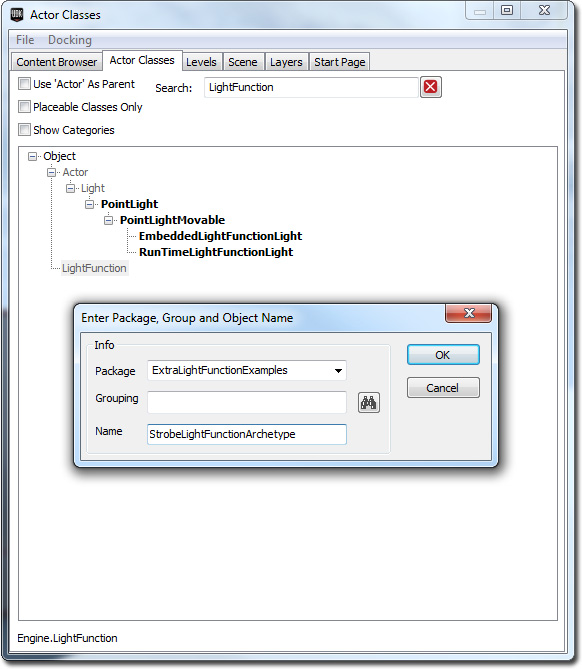
返回到内容浏览器，并双击您的RunTimeLightFunctionLight 类。使用您先前创建的光照函数原型设置LightFunctionArchetype 属性域。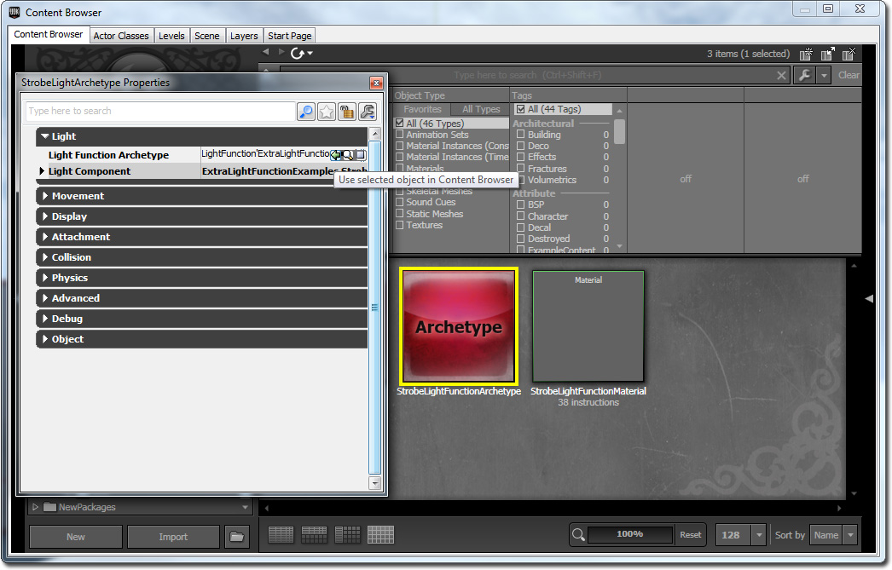
这是个可以在原型中生成的Kismet序列。这样设置是为了生成RunTimeLightFunctionLight 原型。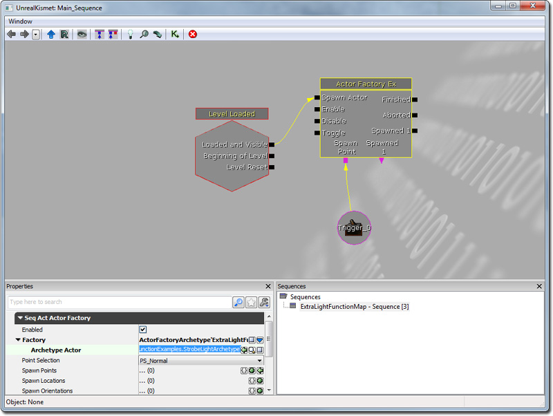
相关主题
- 使用光照函数 - 向您展示了如何使用各种光照函数的开发工具包精华文档。
下载
- 下载Unrealscript光照函数指南所使用的内容。